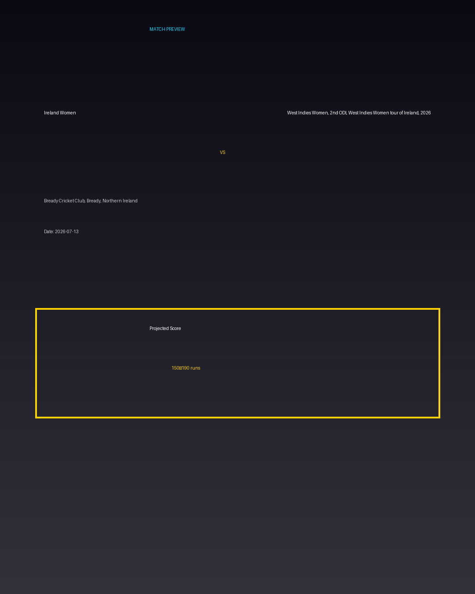

Ireland Women vs West Indies Women, 2nd ODI, West Indies Women tour of Ireland, 2026
Date: 2026-07-13
Venue: Bready Cricket Club, Bready, Northern Ireland


Form Guide
Ireland Women: 🟩 🟥 🟩 🟩 🟥
West Indies Women, 2nd ODI, West Indies Women tour of Ireland, 2026: 🟥 🟩 🟥 🟥 🟩
Pitch Report
Balanced wicket with moderate scoring conditions.
Projected Score
150–190 runs
Key Players
- Ireland Women Key Batter — Batsman
- Ireland Women Strike Bowler — Bowler
- West Indies Women, 2nd ODI, West Indies Women tour of Ireland, 2026 Key Batter — Batsman
- West Indies Women, 2nd ODI, West Indies Women tour of Ireland, 2026 Strike Bowler — Bowler
Advanced Win Probability
Ireland Women: 64.3%
West Indies Women, 2nd ODI, West Indies Women tour of Ireland, 2026: 35.7%
AI Match Prediction
Based on venue conditions, a projected scoring range of 150–190 runs, recent form (with Ireland Women appearing slightly stronger), and the pitch profile ('Balanced wicket with moderate scoring conditions.'), this matchup appears to present Ireland Women entering as clear favorites. Early momentum and top-order execution will likely determine the winner.
